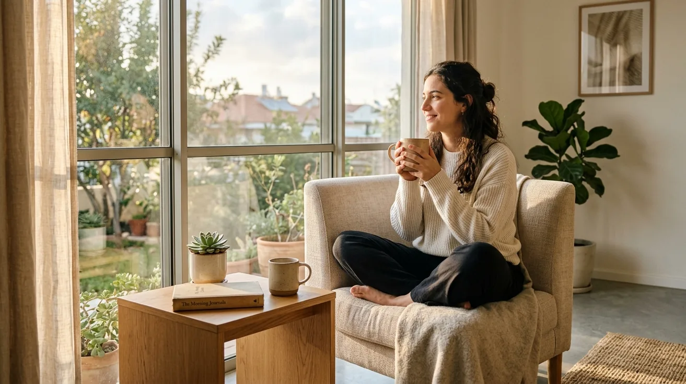
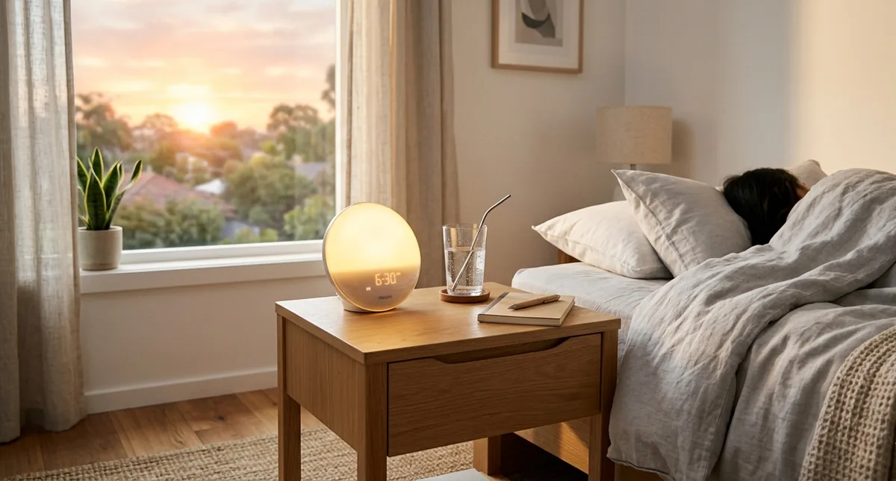

What Is the Best Morning Routine for Busy Adults With No Time?
The best morning routine for busy adults takes 20–30 minutes and includes three elements: a consistent wake-up time, one physical action (even 5 minutes of movement), and a protein-first breakfast. Everything else is optional. Consistency beats complexity every time.

s an Amazon Associate I earn from qualifying purchases.
You've seen the 5am morning routine videos. Cold plunge, meditation, journaling, workout, healthy breakfast — all before 7am. It looks inspiring. It also looks completely impossible when you have a full-time job, a family, and a commute.
The truth is, the bestsimple morning routine for busy adults with no timedoesn't look like that. It looks like 20–30 minutes of intentional actions that set the tone for your entire day — without requiring you to overhaul your life or wake up at 4am.
Here's what actually works.
Quick Answer
The best morning routine for busy adults takes 20–30 minutes and includes three elements: a consistent wake-up time, one physical action (even 5 minutes of movement), and a protein-first breakfast. Everything else is optional. Consistency beats complexity every time.
Why Most Morning Routines Fail for Busy Adults
The problem with most morning routine advice is that it's designed for people with unlimited time and no obligations. A 90-minute routine sounds great in theory — but one school run, one early meeting, or one bad night of sleep and the whole thing collapses.
When your routine is too complicated, missing one piece feels like failing entirely. And that feeling of failure is what makes people give up.
The solution is a minimum viable morning routine — the smallest set of actions that still moves the needle. Something you can do even on your worst days.
The Best Simple Morning Routine for Busy Adults With No Time
Step 1: Wake Up the Right Way (Before Your Alarm)
How you wake up sets the neurological tone for your entire morning. A jarring alarm spike cortisol immediately, leaving you feeling stressed before your day has even started.
TheHatch Restore 3 Sunrise Alarm Clockgradually brightens your room 30 minutes before your alarm time, simulating a natural sunrise. Your body wakes up progressively rather than abruptly — reducing morning grogginess and making it significantly easier to get out of bed. It also has built-in sleep sounds and a wind-down library for the evening routine. One device that improves both ends of your day.
Step 2: Hydrate Before Anything Else (2 Minutes)
You wake up dehydrated every morning — you've gone 7–8 hours without water. Before coffee, before your phone, drink a full glass of water. This simple action rehydrates your brain, kickstarts your metabolism, and reduces the fatigue that most people incorrectly attribute to "not being a morning person."
Keep aSmart Water Bottle with Reminderon your nightstand so it's the first thing you reach for. No decision required — it's just there.
Step 3: Move Your Body for 5–10 Minutes
You don't need a full workout. Five minutes of movement — stretching, bodyweight squats, or a short walk — increases blood flow, raises your body temperature, and triggers neurotransmitter release that improves mood and focus for hours.
Options that take under 10 minutes:
- 5 minutes of full-body stretching on a mat
- 3 sets of push-ups and squats
- A 10-minute walk around the block
- 5 minutes of resistance band work
TheGarmin Vívoactive 5tracks your morning activity, heart rate, and Body Battery — giving you a readiness score that tells you whether to push harder or keep it light. On low-recovery days, 5 minutes of stretching is the right call. On high-readiness days, you can do more.
Step 4: Eat a Protein-First Breakfast (5 Minutes)
Skipping breakfast or eating a carb-heavy one sets you up for an energy crash by 10am. A protein-first breakfast stabilizes blood sugar, reduces hunger hormones for hours, and supports neurotransmitter production that keeps you focused through the morning.
Quick options:
- Greek yogurt with berries and nuts
- Two eggs any style with vegetables
- Protein shake with frozen fruit and spinach
Aim for 25–35g of protein. If you're rushed, a shake takes 90 seconds to make and clean up.
Step 5: One Minute of Intention (Optional but Powerful)
Before you open your phone or email, take 60 seconds to identify the one most important thing you need to accomplish today. Write it down or say it out loud. This single action reduces decision fatigue, improves focus, and creates a sense of purpose that carries through the morning.
This is where aKindle Paperwhitefits in — if you have an extra 10 minutes, reading instead of scrolling social media is one of the highest-ROI morning habits available. Even one page is better than zero. The Kindle's distraction-free environment means you actually read instead of getting pulled into notifications.
Support Your Morning Biology
Morning energy isn't just about routine — it's about what happened the night before.BIOptimizers Magnesium Breakthroughtaken at night supports deeper sleep and nervous system recovery, meaning you wake up with more genuine energy rather than relying on willpower and caffeine to get going.
The 20-Minute Version
If time is tight, here's the minimum viable morning routine:
- Wake up with sunrise alarm — 0 minutes extra
- Drink water — 2 minutes
- 5 minutes of movement — 5 minutes
- Protein breakfast — 5 minutes
- One intention — 1 minute
Total: 13 minutes.Even on your busiest days, this is achievable.

Recommended Products
| Product | Why It Helps | Link |
|---|---|---|
| Hatch Restore 3 | Sunrise wake-up + evening wind-down — transforms both ends of your day | View on Amazon |
| Smart Water Bottle | Reminds you to hydrate — starts your morning right automatically | View on Amazon |
| Garmin Vívoactive 5 | Morning readiness score — know exactly how hard to push each day | View on Amazon |
| Kindle Paperwhite 16GB | Read instead of scroll — highest ROI morning habit for busy adults | View on Amazon |
| BIOptimizers Magnesium Breakthrough | Better sleep tonight = more natural energy tomorrow morning | View on Amazon |
Disclosure: We may earn a small commission if you purchase through our links, at no extra cost to you. We only recommend products we'd genuinely use ourselves.
Common Morning Routine Mistakes
- Checking your phone first thing— immediately puts you in reactive mode; delay phone use by at least 10 minutes after waking
- Making it too complicated— a 5-step routine you do every day beats a 15-step routine you do twice a week
- Relying on motivation— motivation fluctuates; a trigger-based routine (alarm goes off → drink water → move) runs on autopilot regardless of how you feel
- Skipping it when you're tired— the days you feel worst are the days your morning routine matters most; do the 5-minute version instead of skipping entirely
- Not preparing the night before— lay out your workout clothes, prep your breakfast, set your intentions the night before so morning decisions are already made
FAQ
Q: What time should I wake up?
The best wake-up time is consistent — the same time every day, including weekends. Whether that's 6am or 7:30am matters less than the consistency. Your circadian rhythm thrives on regularity.
Q: Do I need to wake up early to have a good morning routine?
No. A morning routine is about what you do with the time between waking up and starting work — not about how early you wake up. A 7am wake-up with a solid 20-minute routine beats a 5am wake-up with two hours of aimless scrolling.
Q: What if I have kids and my mornings are chaotic?
Wake up 20–30 minutes before your kids. That's your window. Even 15 minutes of quiet time before the chaos starts makes a measurable difference in how you handle the rest of the morning.
Q: Is coffee part of a good morning routine?
Coffee is fine — but timing matters. Delay your first coffee 60–90 minutes after waking to let your cortisol levels peak naturally first. Drinking coffee immediately after waking blunts its effect and increases afternoon dependency.
Q: How long does it take for a morning routine to feel automatic?
Most people find a simple morning routine feels natural within 3–4 weeks of consistent practice. The first week is the hardest — after that, the routine runs increasingly on autopilot.
Final Tip
The bestsimple morning routine for busy adults with no timeis the one you'll actually do tomorrow — not the perfect one you'll start "when things calm down."
Tonight, set your alarm 20 minutes earlier than usual and put a glass of water on your nightstand. Tomorrow morning, drink it before you touch your phone. That's your morning routine. Build from there.
That's one small daily move — exactly the kind that adds up to a big lifetime gain.
Want more practical health habits for busy adults? Browse our guides at EverydayFitHabits.com — built for people who don't have time to waste.